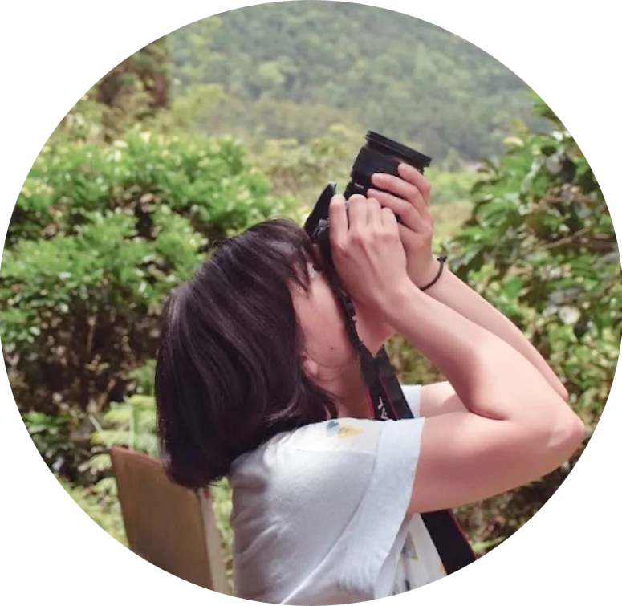

About
關於
人類的時間不會走圓圈，而是直線前進。
米蘭‧昆德拉《生命中不能承受之輕》
這正是人類得不到幸福的緣故，因為幸福就是渴望重複。
關於我
我是 Meng Ya。
- 2014年開始做菜，什麼菜系都想試試的自由派，喜歡研究食材產地，品嘗友善環境的滋味。義式披薩狂熱者。
- 2017年開始攀岩，曾是岩館的打工仔和菜鳥定線員。
- 喜歡不特定的戶外活動、接觸土地，特別喜歡鳥，也關注生態議題。曾養了 2 年蚯蚓用來吃廚餘。不太會種植物，目前只有養活蔥和九層塔過。
- 喜歡閱讀（但這些年書讀得比較少），讀了自然會思考、會需要書寫。還有太多來不及寫成文章的筆記。
- 喜歡學習，認識和理解各種可能性，藉由梳理複雜的世界，釐清自己的價值觀。
Stay hungry, stay humble. - 關注各種社會議題，但容易感到無力而保持距離；希望自己能在微小的實踐裡，蓄積足夠的道德勇氣，無畏懼地捍衛認同的價值。
工作
接案 5 年的非典型自由工作者。
擅長拆解問題、研究分析，不急著「進製作」，而是先了解需求、找到痛點，再決定做什麼、怎麼做。如果我的跨領域知識和技能用得上，就能提供一條龍的「分析→規劃→製作」服務。
合作的單位和專案，大多與人文歷史、生態環境、政策、非營利組織有關；成果的形式多元，管理系統、主題網站、活動企劃、手冊、影片等等，在我能力可及併同完成。
可以到 Understory 看看具體的服務內容與我曾做過的專案，也歡迎直接來信聊聊。
